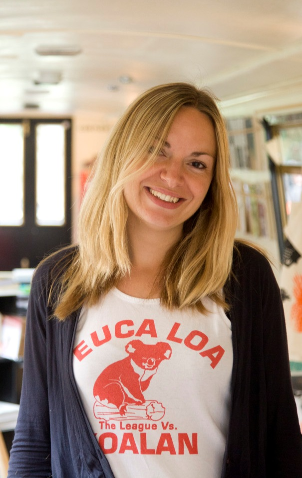
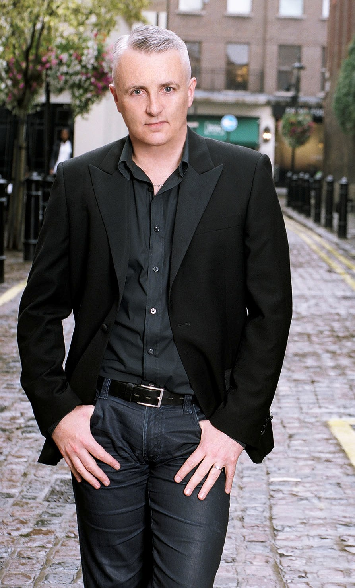
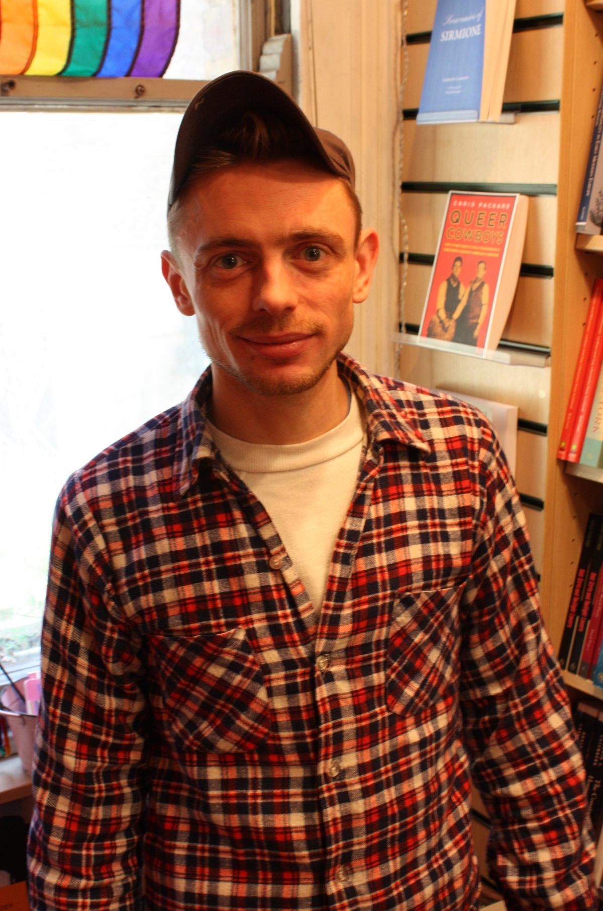

Monday 25th of February 2013, 1400hrs
We are delighted to finally reveal the full judging panel for The Green Carnation Prize 2013. The judges are Christopher Bryant, editor of Polari Magazine; Sarah Henshaw, barge based bookseller and writer; Kerry Hudson, author and Clayton Littlewood, journalist and author. The judges will be chaired by Uli Lenart, bookseller and Events, Press and Online Development Manager at Gay’s the Word.
  
{kind=link}
{kind=link}
{kind=link}
{kind=link}
The prize is now open for submissions, which this year have changed to ‘catch some of the books we noticed missed due to proofs not being available at the end of previous submission guideline dates’ said Simon Savidge, Honorary Director of the prize, ‘though alas longlisted titles that fall into the new submission dates will not be eligible.’ The new dates are books published, for the first time in the UK, between September the 31st 2012 and October the 1st 2013. For more information on the submission details you can visit their dedicated page here, for more information on the judging panel for 2012 you can visit the ‘Judges 2013’ page here.
So the Green Carnation Prize 2013 is now officially open.